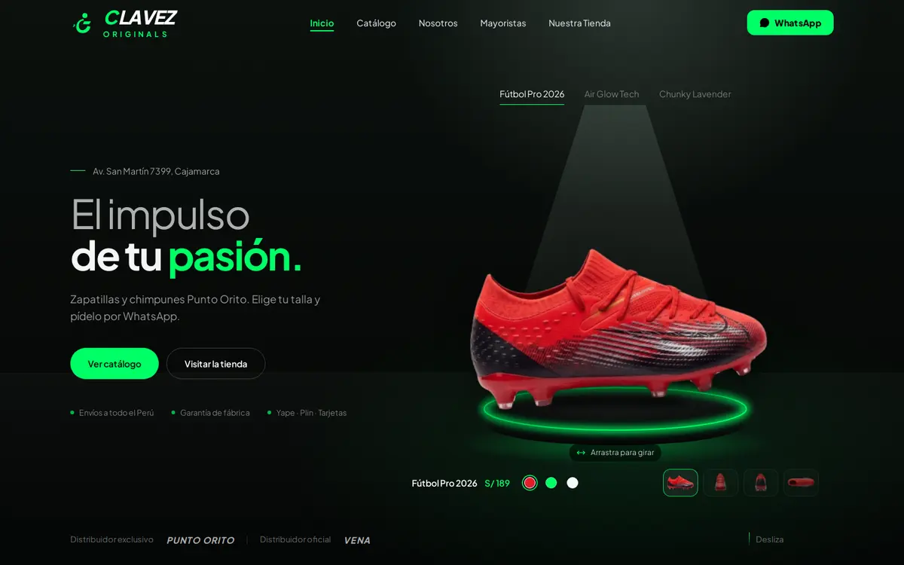
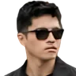
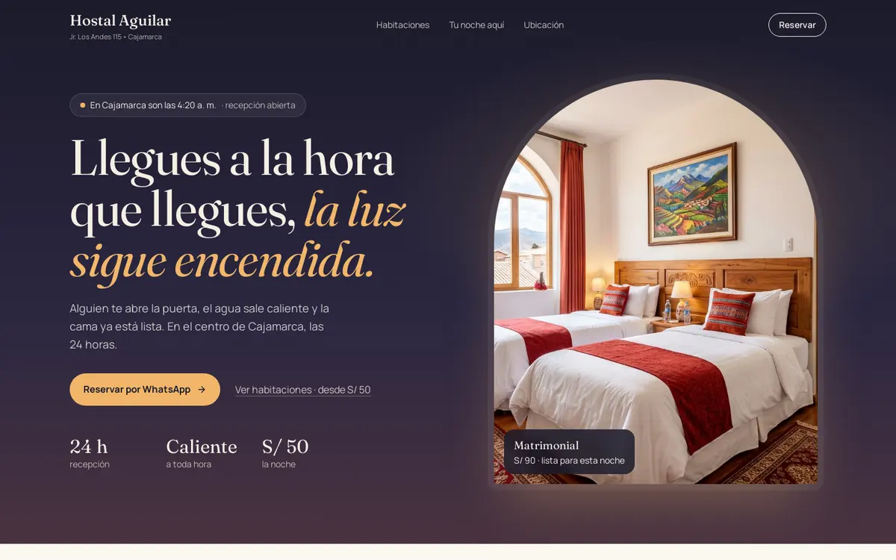
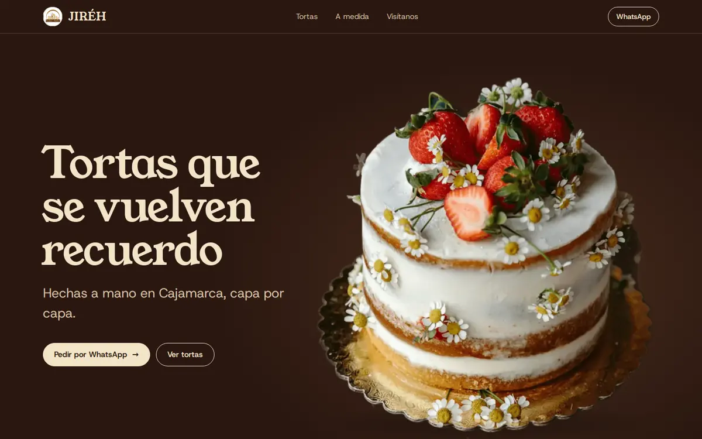

01 · tienda
Chavez Originals
Tienda de calzado con vitrina interactiva, catálogo administrable y pedidos por WhatsApp.
Conecto tus herramientas, automatizo tus procesos y pongo la inteligencia artificial a trabajar para ti. Tú te enfocas en crecer.

Frank Abantote respondo yoPor qué a medida
No vendo plantillas. Tomo las medidas de tu negocio —cómo vendes, cómo respondes, qué haces a mano— y construyo solo lo que le queda bien.
Servicios
Servicios para vender más, responder mejor y dejar de hacer a mano lo que puede hacerse solo.
Sin precios fijos: te envío una cotización según lo que necesitas.Cotización sin compromiso ↗
El probador
Escribe el nombre de tu negocio, elige qué te quieres probar y lo coso para ti, aquí mismo.
Asistente con IA · Frank revisa cada caso · Lo que escribas se guarda solo para responderte (Ley 29733)
Igual que un sastre: primero mido, después corto.
Una llamada para entender cómo trabajas hoy y dónde se te va el tiempo.
Te envío un plan claro y una cotización según lo que necesitas, sin compromiso.
Construyo y te muestro avances; ajustamos sobre la marcha hasta que calce.
Lo dejo funcionando en tu negocio y te enseño a usarlo.
Proyectos y laboratorio

Tienda de calzado con vitrina interactiva, catálogo administrable y pedidos por WhatsApp.

Hospedaje con reservas por WhatsApp y panel de administración.

Catálogo de tortas con «Arma tu torta» en vivo y pedidos por WhatsApp.
Siguiente paso